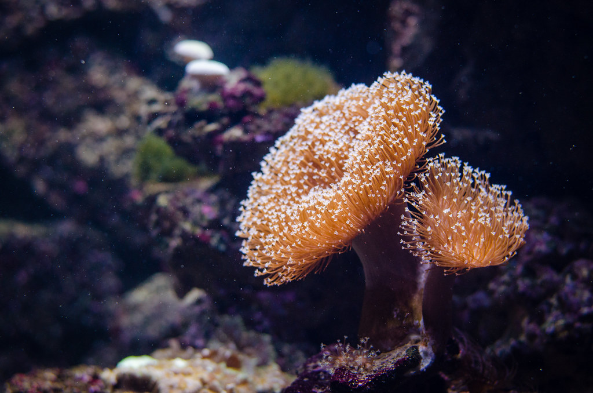
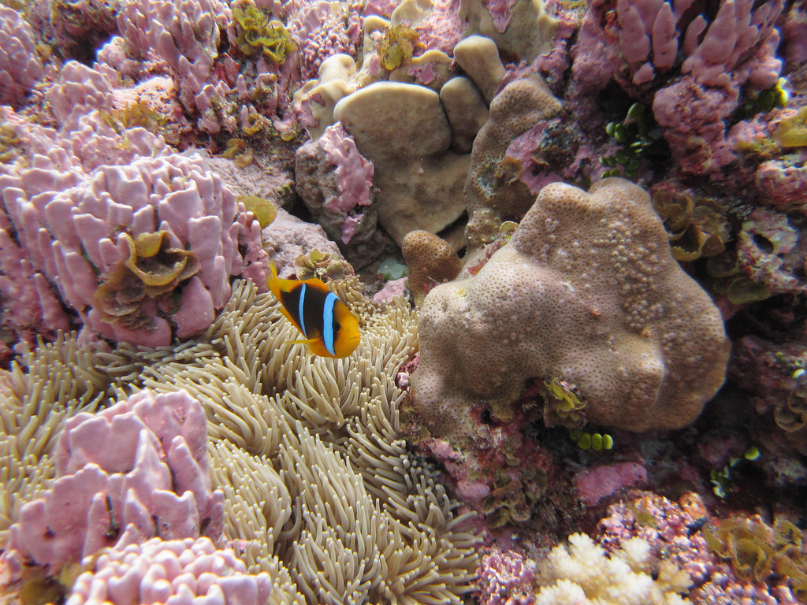
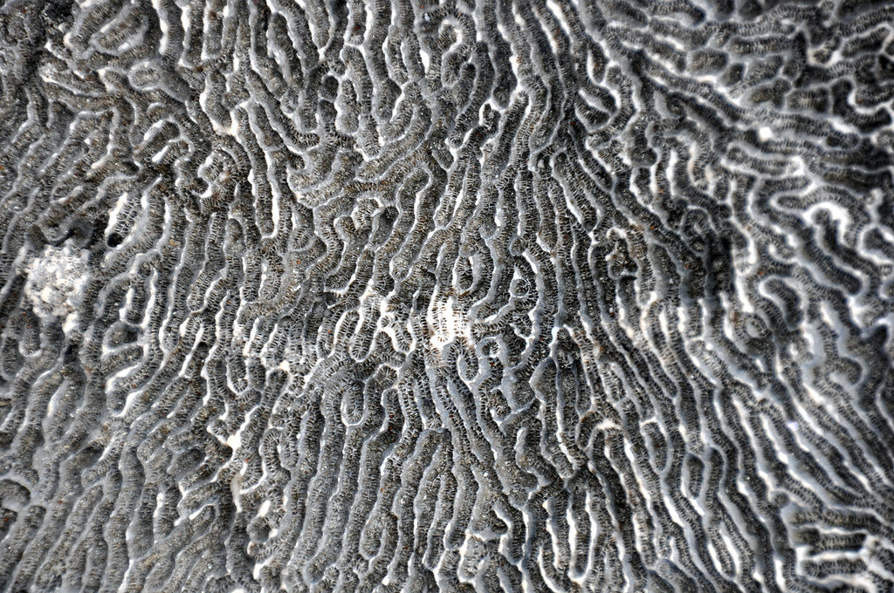

Los corales blandos, como los dedos de mar y los látigos de mar,
son blandos y flexibles y a menudo se parecen a plantas o árboles.
Estos corales no tienen esqueletos duros y no son corales constructores
de arrecifes, sino que tienen núcleos de tipo madera y cortezas carnosas
para protegerse. Al igual que los corales duros, suelen vivir en colonias.

Los corales duros, como el coral cuerno de alce y el coral cerebro, crecen
en colonias y suelen denominarse “corales constructores de arrecifes”.
Los corales duros crean esqueletos de carbonato de calcio, una sustancia caliza dura.
Con el tiempo, este mineral se acumula para formar los cimientos de un arrecife de coral
y proporciona una estructura sobre la que pueden asentarse las crías de coral. Los corales
duros dependen de unas diminutas algas llamadas zooxantelas que viven en su interior.
Juntos comparten una relación simbiótica: los corales proporcionan refugio a las zooxantelas
y éstas, a su vez, proporcionan alimento a los corales.

Se llama coral negro por la oscuridad de sus esqueletos.
Este color negro le da una belleza que ha llevado a que se hicieran joyas
desde tiempos inmemoriales. Esto ha llevado a que para encontrar coral negro
haya que sumergirse en las profundidades de los océanos. En definitiva, se
encuentra en recónditos parajes del océano que tienen cierto aire de casa abandonada.
Aunque no lo parezca inicialmente, la verdad es que el coral negro es un animal
colonial que se suela confundir con un arbusto del reino vegetal. Otras características
distintivas de las especies del mismo orden son las espinas que recubren el esqueleto o axis,
que pueden tener formas diferentes, y la simetría hexameral en su estructura anatómica.
